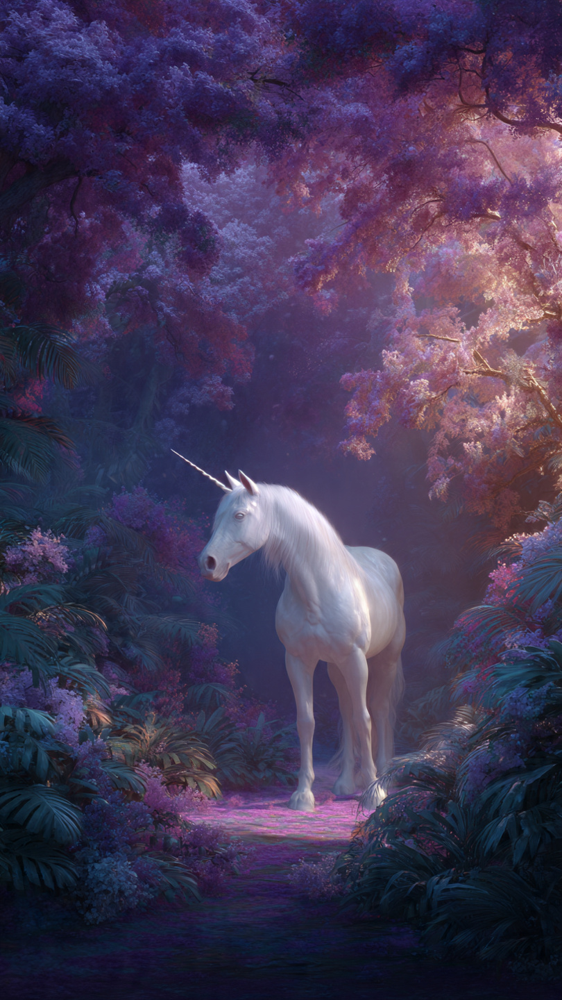
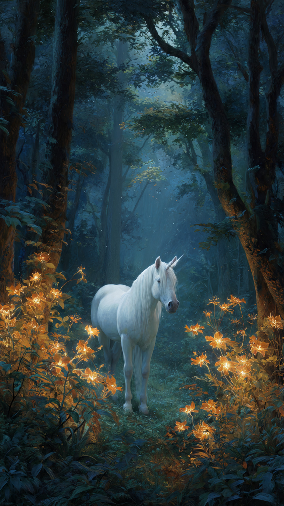

```html
🦄 الحصان السحري الذي يحقق أمنية واحدة فقط | قصص أطفال
```
في غابة سحرية بعيدة، كانت تعيش وحيدة جميلة اسمها لومي.
لم تكن لومي مثل باقي الأحصنة.
فقد كان لديها قرن صغير يلمع فوق رأسها، وكانت تستطيع رؤية الأشياء الجميلة التي لا يلاحظها الآخرون.
كانت الحيوانات تأتي إليها دائمًا وتطلب منها تحقيق الأمنيات.
لكن هناك قانونًا قديمًا في الغابة:
"الحصان السحري يستطيع تحقيق أمنية واحدة فقط في حياته."
كانت لومي تفكر كثيرًا في هذه الأمنية.
هل تستخدمها لتصبح أقوى حصان في العالم؟
أم تستخدمها لتجعل حياتها أسهل؟
أم تحتفظ بها لوقت تحتاجها فيه؟
مرت الأيام، وكانت لومي تساعد الجميع بطرق بسيطة.
كانت ترشد الحيوانات الضائعة، وتساعد النباتات على النمو، وتنشر السعادة في الغابة.
لكنها لم تستخدم أمنيتها أبدًا.
وفي يوم من الأيام، حدث أمر غريب.
اختفت ألوان الغابة فجأة.
أصبحت الزهور بلا ألوان، وتحولت السماء إلى اللون الرمادي، وشعرت الحيوانات بالحزن.
ذهبت لومي إلى أقدم شجرة في الغابة وسألتها:
"ماذا حدث؟"
أجابت الشجرة:
"اختفى حجر الألوان السحري، وبدونه ستفقد الغابة جمالها."
سألت لومي:
"هل يمكنني العثور عليه؟"
قالت الشجرة:
"نعم..."
"لكن الطريق سيكون صعبًا، وقد تحتاجين إلى استخدام أمنيتك الوحيدة."
نظرت لومي إلى قرنها اللامع.
كانت أمامها أصعب لحظة في حياتها.
هل تستخدم أمنيتها لإنقاذ الغابة؟
📷 الصورة رقم 1

بدأت لومي رحلتها للبحث عن حجر الألوان السحري.
كانت تسير بين الغابات والجبال، وتتبع آثار الضوء الضعيف الذي تركه الحجر.
كان الطريق طويلًا، لكنه كان يعلمها أشياء جديدة في كل خطوة.
وصلت إلى وادٍ مظلم، وهناك وجدت مخلوقات صغيرة حزينة.
سألتهم:
"لماذا أنتم هنا؟"
أجابوا:
"فقدنا طريق العودة إلى منازلنا منذ اختفاء ألوان الغابة."
كان بإمكان لومي أن تكمل طريقها بسرعة، لكنها قررت مساعدتهم.
استخدمت ذكاءها، وقادتهم عبر الطريق الصحيح حتى وصلوا إلى بيوتهم.
قال أحدهم:
"شكرًا لك، لقد أعدت لنا الأمل."
واصلت لومي السير حتى وصلت إلى جبل عالٍ.
في قمته وجدت كهفًا يخرج منه ضوء خافت.
دخلت الكهف بحذر، وهناك وجدت حجر الألوان.
لكنه كان محاطًا بحاجز سحري.
ظهر حارس الكهف وقال:
"لا يستطيع أخذ الحجر إلا من يعرف قيمة الأمنيات."
قالت لومي:
"أنا أحتاجه لإنقاذ الغابة."
سألها الحارس:
"لكن لديك أمنية واحدة فقط..."
"هل ستستخدمينها الآن؟"
نظرت لومي إلى الحجر.
ثم فكرت في كل الحيوانات التي ساعدتها، وكل اللحظات الجميلة التي عاشتها.
وأدركت أن القرار الحقيقي لم يكن في الحصول على القوة...
بل في معرفة كيف تستخدمها.
📷 الصورة رقم 2

اقتربت لومي من حجر الألوان السحري.
أغمضت عينيها وفكرت في أمنيتها الوحيدة.
كان بإمكانها أن تطلب أي شيء تريده...
لكنها اختارت شيئًا مختلفًا.
قالت:
"أتمنى أن تعود ألوان الغابة، وأن يشعر الجميع بالسعادة من جديد."
بدأ قرن لومي يلمع بقوة، وانتشر ضوء جميل في كل مكان.
تحول الحجر إلى آلاف الألوان الصغيرة، وطارت نحو السماء مثل النجوم.
عادت الأزهار إلى ألوانها، وأصبحت الأشجار أكثر جمالًا، وعادت الحيوانات تضحك وتلعب.
فرحت الغابة كلها.
عادت لومي إلى منزلها، لكنها شعرت بشيء غريب.
لقد استخدمت أمنيتها الوحيدة...
لكنها لم تشعر بالحزن.
فقد اكتشفت أن أجمل أمنية هي التي تجعل الآخرين سعداء.
اقتربت منها الشجرة القديمة وقالت:
"لقد أثبتِ أن السحر الحقيقي ليس في تحقيق أمنية..."
"بل في القلب الذي يختار كيف يستخدمها."
ومنذ ذلك اليوم، أصبحت لومي أشهر حصان سحري في الغابة.
لم يكن الجميع يحبها لأنها تملك قرنًا سحريًا...
بل لأنها كانت تملك قلبًا مليئًا بالخير.
وكانت دائمًا تقول للصغار:
"قد نملك فرصة واحدة فقط..."
"لكن اختيارنا الصحيح يمكن أن يجعلها تكفي لصنع عالم أجمل."
🦄🌈 انتهت القصة 🌈🦄
العبرة:
أفضل الأمنيات هي التي تجلب الخير والسعادة للآخرين.